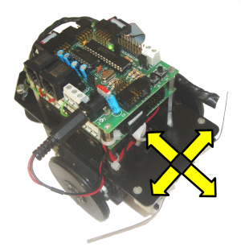
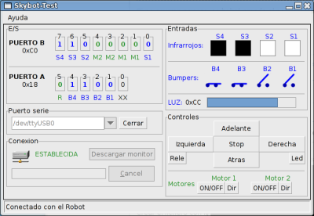
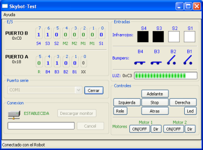

Acabo de liberar la versión 1.0 del Skybot-test, un programa con interfaz gráfica que permite el control del robot Skybot, así como la visualización en pantalla del estado de todos sus sensores: 4 CNY70 (infrarrojos), 4 bumpers y un sensor de luz. Aquí se puede ver un pantallazo de su ejecución en una máquina GNU/Linux con Debian/Etch:

Es un programa muy útil para realizar pruebas con el skybot y detectar si todos los sensores y motores están funcionando correctamente. Es libre y multiplataforma. Está programado en Python y usa la librería gráfica wxpython. Este es el aspecto que tiene al ejecutarse en una máquina con windows XP:

Si tienes un Skybot prueba el programa y dime los fallos que encuentres. Está muy probado en Linux, pero no tanto en Windows. Para las pruebas de Windows he utilizado una máquina virtual (VirtualBox) sobre Debian Etch.
Gracias, nos viene al pelo.
Lo probaremos durante el taller.
Por un error con el Spam, he borrado sin querer algunos comentarios 🙁